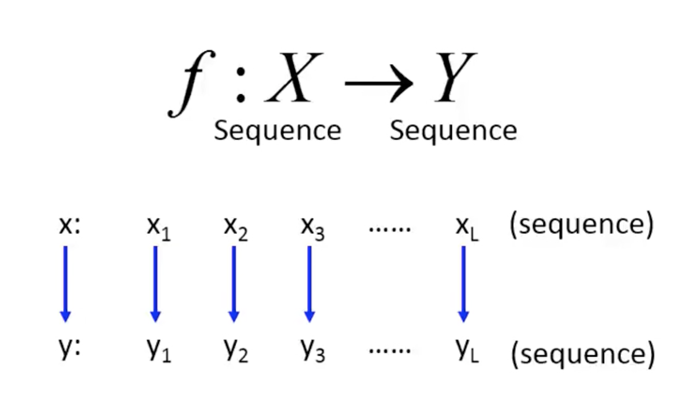
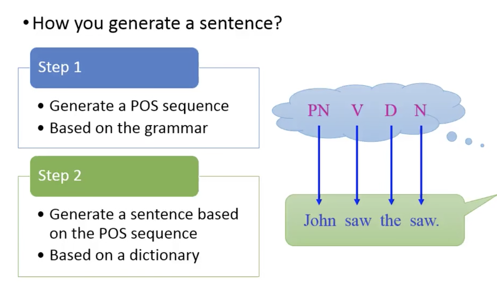
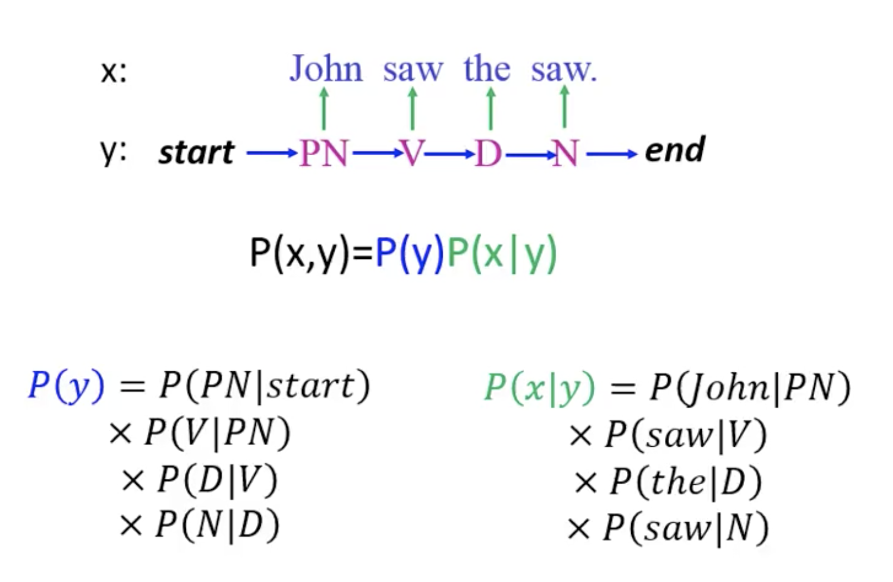

隐马尔科夫模型(Hidden Markov Model, 以下简称HMM), 是比较经典的机器学习模型了. 它在自然语言处理, 模式识别等领域得到广泛的应用.
当然, 随着目前深度学习的崛起, HMM的地位有所下降. 但是作为一个经典的模型, 学习HMM的模型和对应算法, 对我们解决问题建模的能力提高以及算法思路的拓展还是很好的.
HMM介绍
首先看看什么样的问题解决可以用HMM模型, 可以使用HMM模型的问题一般有如下两个特征:
* 问题是基于序列的, 比如时间序列, 语言序列.
* 问题中有两类数据, 一类序列数据是可以观测到的, 即观测序列; 而另一类数据是不能观察到的, 即隐藏状态序列, 简称状态序列, 这也是模型名称中”隐”的由来.
一般来说, HMM经常用于解决序列标注问题(Sequence Labeling Problem).

如上图, 给到一个可观测序列$X$, 推断出隐藏序列$Y$. 具体说来, 比如要处理词性标注(POS tagging)问题, 即给出一段语句, 对语句中的各个词汇标注词性(如动词, 名词等). 那如果让HMM来做, 是如何处理这样的问题的呢?

可以有这样的一个假设, 当我们在说一句话的时候, 我们第一步是通过语法规则, 生成一个词性序列, 然后第二步是基于这个词性序列与词典, 生成句子.
HMM本身的模型结构是一个有向图, 隐藏节点之间具有马尔可夫性, 即当前状态节点仅依赖于上一个节点, 同时当前可观测节点仅依赖于当前状态节点.
那么在这个模型结构之下, 整个过程(生成状态序列, 生成可观测序列)的联合概率计算方式如下图:

联合概率的计算主要由两部分组成, 状态序列之间转移的部分称为转移概率(Transition probability), 从状态序列到观察序列的部分称为发射概率(Emission probability). 可以对应到两个参数矩阵, 马尔科夫链的状态转移矩阵$A$, 观察序列的生成(发射)矩阵$B$.
到了这里, 大概知道HMM长什么样了, 同时也知道可以用来处理哪一类的问题.
假设模型参数为$\lambda=\{A,B\}$, 初始分布算作$A_{start}$, 观察序列为$O=\{o_1,o_2,\dots o_n\}$.
现在有了下面几个问题:
* 估计观察序列概率. 在已知模型参数$\lambda$和观察序列$O$的情况下, 如何计算观察序列出现的概率$P(O|\lambda)$. 这个问题相对简单.
* 预测/解码. 已知模型参数$\lambda$和观察序列$O$的情况下, 求最有可能出现的隐藏状态序列, 会用到维特比算法, 要稍微难一些.
* 模型参数学习问题. 这个问题如果给定隐藏状态序列, 那么会非常简单, 直接统计就可以得到$\lambda$. 但是如果只给出观察序列$O$, 估计$\lambda$, 使得$P(O|\lambda)$最大, 就比较复杂了, 需要用到EM算法.
估计观察序列概率
假设现在已经知道了HMM的参数$\lambda$, 观测序列$O$, 求解$P(O|\lambda)$.
这个问题是比较简单的, 首先从直观的暴力法的角度来看. 如果能够列举出所有可能的长度为$T$的隐藏序列$H=\{h_1,h_2,\dots,h_T\}$, 那么对于每个可能的隐藏序列, 可以得到联合概率分布$P(O,H|\lambda)$, 这样就可以通过对所有可能求和, 得到边缘分布$P(O|\lambda)$:
对于暴力法来说, 其时间复杂度取决于序列长度$T$和隐藏状态数$N$, 为$O(TN^T)$.
OK, 现在有了暴力法, 那么接下来就只差简答的优化了ヽ(✿ﾟ▽ﾟ)ノ
优化方法仍然是属于动态规划方法(诶为什么说又), 叫做前向法. 有前向法就有后向法, 不过两者原理类似.
动态规划算法通常来说有几个要点:
- 定义好子问题.
- 找到递推公式.
- 有一个初始解.
那么在这里, 我们要求$P(O|\lambda)$, 不妨定义一个前向概率:
表示在$t$时隐藏状态为$i$, 同时观测序列为$O$的联合概率.
在$t=1$时, $\alpha_{1}(i)=A_{start\to i}\times B_{i\to o_1}$.
在$t>1$时, $\alpha_{t}(j)=(\sum\limits_{i=1}^N \alpha_{t-1}(i) A_{i\to j})\times B_{j\to o_1}$. 这一步递推是核心, 即每一时刻的前向概率, 可以通过前一个时刻所有隐藏状态的前向概率求和得到.
在$t=T$时, 得到$\alpha_T(i)$, 而想要求解的$P(O|\lambda)=\sum_i\alpha_T(i)$
利用前向法估计观察序列的概率, 时间复杂度为$O(TN^2)$.
类似的, 定义后向概率:
对应的递推公式为:
基于上面两个前向与后向概率, 可以进一步得到下面几个概率公式, 它们将在HMM使用EM学习参数时发挥作用.
给定参数$\lambda$和观察序列$O$, $h_t=i$的概率:
由前向后向概率可得:
所以:
给定参数$\lambda$和观察序列$O$, $h_t=i,h_{t+1}=j$的概率:
由前向后向概率可得:
所以:
解码
解码, 或者预测, 指的是已知模型参数$\lambda$和观察序列$O$的情况下, 求最有可能出现的隐藏状态序列.
使用与分词那里类似的维特比算法, 找到合适的子问题, 以及递推关系进行逐步求解.
定义一个函数$\delta_t(h)$, 表示在$t$时状态节点为$i$的最大路径(概率):
其中$h\in\{1,2,\dots,N\}$.
对应的递推表达式为:
有了上面的递推表达式, 可以从第一个状态节点$\delta_{1}(h)=A_{start\to h}B_{h\to o_{1}}$逐步往后计算, 同时需要记录下每个时刻下每个状态的上一个状态, 即路径.
在计算到$\delta_{T}(h)$时, 在$h\in\{1,2,\dots,N\}$中找到最大的状态, 其对应的路径, 既是需要求解的隐藏状态序列$H$.
模型参数估计
在模型参数估计时, 如果给定隐藏状态序列, 那么会非常简单, 直接统计就可以得到$\lambda$. 但是如果只给出观察序列$O$, 估计$\lambda$, 使得$P(O|\lambda)$最大, 就比较复杂了, 需要用到EM算法
直接统计频次
在一些情况下, 比如词性标注, 通常会有供学习的语料, 这些语料是已经标注好的, 即同时提供了观测序列$O$和状态序列$H$, 此时估计参数矩阵$A$和$B$的方式, 可以采用直接统计频次.
对于转移矩阵$A$来说:
对于发射矩阵$B$来说:
没错, 就是这么简单.
利用EM算法
如果对EM算法不太了解的同学, 可以在我的博客的搜索页中, 查找一下”EM算法”的关键词, 即可看到专门对EM算法的介绍.
那么这里假设已经对EM算法流程熟悉了, 直接开搞.
按照EM算法, 需要分两步, 在E步的时候求出联合分布$P(O,H|\lambda)$基于条件概率$P(H|O;\lambda’)$的期望, 其中$\lambda’$为当前的模型参数; 然后在M步利用MLE最大化这个期望, 得到更新的模型参数$\lambda$, 作为下一轮迭代时的$\lambda’$, 直到最终收敛.
假设我们的训练数据为$\{(O_1, H_1), (O_2, H_2), …(O_D, H_D)\}$, 其中任意一个观测序列为$O_d = \{o_1^{(d)}, o_2^{(d)},\dots,o_T^{(d)}\}$, 其对应的隐藏序列为$H_d = \{h_1^{(d)}, h_2^{(d)},\dots,h_T^{(d)}\}$.
联合分布表达式为:
在E步的期望表达式为:
在M步极大化上式, 由于$P(H|O,\lambda’) = P(H,O|\lambda’)/P(O|\lambda’)$, 且$P(O|\lambda’)$是常数, 因此要极大化的式子等价于:
将$P(O,H|\lambda)$带入, 可得:
首先求解$A$, 此时式子可整理为:
同时由于$A_{i\to j}$满足约束条件$\sum\limits_{j}A_{i\to j}=1$, 所以利用拉格朗日乘子法, 得到拉格朗日函数, 对$A_{i\to j}$求偏导, 并令其等于0, 可得到:
然后求解$B$, 与求解$A$一样:
并且$B_{i\to j}$满足$\sum\limits_{j}B_{i\to j}=1$, 同样使用拉格朗日乘子法可得:
其中$I(o_t^{(d)}=j)$当且仅当$o_t^{(d)}=j$时为1, 否则为0.
上面式$(1)$和式$(2)$即为最后用于迭代的公式, 其中涉及到的运算在前面几小节中也有涉及到, 包括$\gamma_t(i)$与$\xi_t(i,j)$.
HMM的局限性
那么, HMM有没有啥缺点呢, 或者说HMM有没有啥局限性呢?
当然是有的, 从HMM的模型结构与假设出发, 就比较容易能够看出其局限性.
首先是状态序列的马尔科夫性, 当前节点仅依赖过去节点, 这某种意义上类似于Bigram, 属于考虑了序列信息, 但只包含了局部信息.
然后就是观测序列, 每个时刻的观测序列仅依赖于当前状态序列, 这可能也是有一些问题的, 为什么不能依赖于当前节点之前或者之后的节点呢?
以上两个不足, 可能会带来一些问题. 例如, 通过现有的参数$\lambda$, 得到状态$a$到状态$b$的转移概率$P_{a\to b}$较大, 同时状态$b$到观测$c$的发射概率$P_{b\to c}$也较大, 那么通过HMM就可以推断$P_{a\to b\to c}$的概率较大. 但是, 实际上在真实数据中$P_{a\to b\to c}$概率可能很小, 只是因为HMM局部地学习了$P_{a\to b}$和$P_{b\to c}$, 导致出现了这样的错误.
针对这样的问题, 条件随机场CRF等模型做出来改进.
尽管如此, HMM仍然在不少任务中可以使用, 特别是在训练数据不多的时候.
代码示例
如果要体验HMM模型的使用, 可以尝试一个叫hmmlearn的Python包, 从名字就可以看出来, 与sklearn的API格式是比较类似的, 所以使用起来也比较简单.
在hmmlearn中, 实现了三种HMM模型, 其中包括:
* MultinomialHMM, 就是上面讲到的HMM模型, 其观察序列是离散的.
* GaussianHMM, 其观察序列是连续的, 服从高斯分布, 此时状态序列与观察序列之间的关系不能再使用发射矩阵$B$描述, 而使用均值与协方差描述.
* GMMHMM, 其观察序列服从混合高斯分布, 相对复杂一些, 一般使用GaussianHMM即可.
这里主要对MultinomialHMM的解码, 生成, 训练做一个展示, GaussianHMM与GMMHMM的使用是类似的.
对于MultinomialHMM模型, 使用比较简单, startprob_参数表示状态序列初始分布$A_{start}$, transmat_表示状态转移矩阵$A$, emissionprob_表示发射矩阵$B$.
这里假设有两枚硬币, 每次随机选取一枚(初始分布为$[0.5, 0.5]$), 硬币1的则转移概率为$[0.7, 0.3]$, 硬币2的转移概率为$[0.5, 0.5]$, 硬币1翻正反面概率为$[0.5,0.5]$, 硬币2翻正反面概率为$[0.8,0.2]$.
1 | import numpy as np |
1 | # 设置观察与状态的离散值 |
1 | # 设置初始分布, 转移矩阵, 发射矩阵 |
1 | # 构造模型 |
1 | # 计算观察序列概率 |
1 | 0.026785999999999994 |
1 | # 解码 decode或predict方法都可以 |
1 | 观察序列: 正面, 正面, 反面, 反面, 正面 |
1 | # 利用上面的模型, 生成观察序列和状态序列 |
1 | array([[0], |
1 | # 训练 |
1 | [0.44676585 0.55323415] |
对比输出结果和一开始的参数设置, 发现是非常接近的, 奥利给!